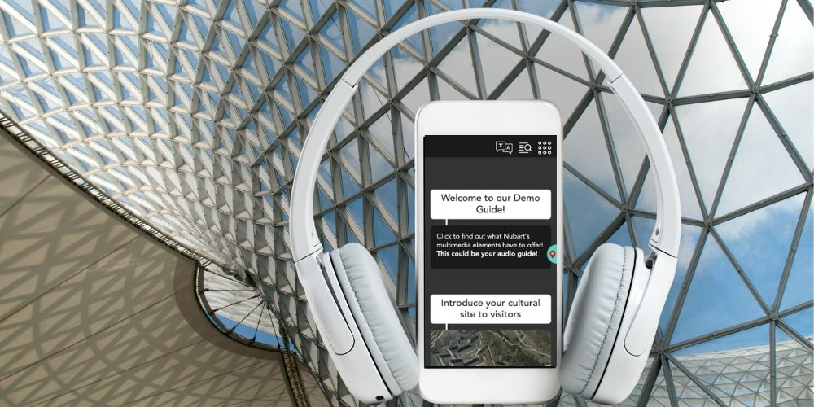
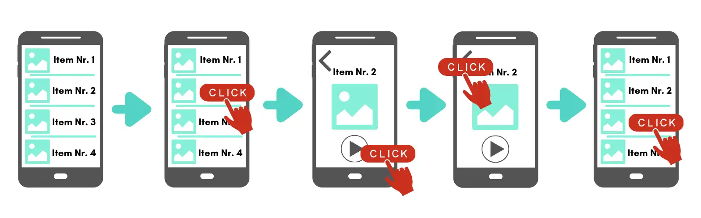
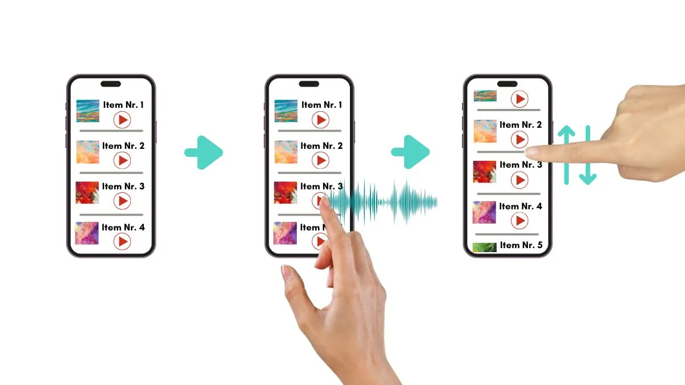

廣田 奈美
日本事業展開担当
スクロール型とクリック型：デジタル音声ガイドの使いやすさを左右する導線設計とは
来館者がデジタル音声ガイドをどのように操作するかは、多くの博物館・美術館が考える以上に重要です。音声ガイドでは、台本、ナレーション、画像、動画などのコンテンツに注目が集まりがちですが、その土台となるナビゲーション設計は見落とされることが少なくありません。しかし実際には、この構造上の選択こそが、来館者が何件のトラックを再生するか、そして展示にどれだけ深く関わるかに大きく影響します。
本記事では、Webベースのデジタル音声ガイドで主流となっている2つのナビゲーションモデルを比較し、なぜ一方が博物館環境により適しているのかを、確立されたUX原則に基づいて解説します。また、わかりやすさ、パーソナライズ性、使いやすさを高めるためのコンテンツ設計についても実践的に紹介します。博物館・美術館、音声ガイド提供事業者、文化分野のUX担当者に向けた参考記事です。

テンキーからタッチスクリーンへ：なぜ構成設計が重要なのか
従来の専用音声ガイド端末では、コンテンツ構成はそれほど重要視されていませんでした。来館者は番号を入力し、対応する音声を再生し、次へ進むだけだったからです。求められる操作は「次は何番か」を選ぶこと程度でした。
しかし、デジタル音声ガイド — ネイティブアプリであれ、PWA（Progressive Web App）であれ — は状況を大きく変えました。タッチスクリーン型のインターフェースでは、利用可能なトラック一覧を表示し、目的のコンテンツを探せるようにし、ときには動画・画像ギャラリー・テキストなどの補足情報も扱う必要があります。こうした機能は大きな利点ですが、同時に専用端末にはなかった新たな設計課題を生みました。来館者はトラック間をどのように移動すべきか？
この問いに対する答えによって、現在のデジタル音声ガイドは大きく2つのナビゲーションモデルに分かれます。
デジタル音声ガイドにおける2つのナビゲーションモデル：スクロール型と画面遷移型
多くのWebベース音声ガイドは、ここでいう画面遷移型を採用しています。来館者にはトラック一覧が表示され、スクロール可能なメニューや下部ナビゲーションバーに収められていることが一般的です。トラックをタップすると、新しい画面または別ビューで内容が開きます。別のトラックを選ぶには、一覧へ戻り、次の項目までスクロールし、再度タップする必要があります。実装によっては、現在のトラックを閉じて一覧に戻り、次のトラックを開くという少なくとも2段階の操作が必要になります。
これは本質的に、PC向けWebサイトの発想をそのままスマートフォン画面へ持ち込んだ設計です。デスクトップ環境では、複数ページを行き来する構成は合理的です。大きな画面があり、サイドバーやヘッダーにメニューを常時表示でき、戻る操作も簡単だからです。しかし、展示の前で片手に持つ6インチ前後のスマートフォン画面では、多くの利点が失われます。画面は小さく、コンテンツと一覧情報を同時に見せにくく、戻る操作はブラウザのUIと競合し、画面遷移のたびに来館者の注意が途切れます。本来向けられるべき注意は、展示物そのものに向かうべきです。
その対極にあるのがスクロール型です。この方式では、あるセクション内のすべてのトラックが1つの連続したページ上に並びます。トラックをタップすると、その場で再生が始まり、画面は切り替わりません。来館者は上下にスクロールして前後の項目を確認でき、別のトラックへの切り替えもワンタップで行えます。戻る操作も、画面遷移も、現在位置の再確認も不要です。閲覧、選択、視聴がひと続きの流れとして進むため、展示体験を妨げにくい設計です。
公平を期して言えば、多くの画面遷移型ガイドにも一覧画面は存在します。多くは下部メニューなどから開けるようになっています。ただし重要なのは、その一覧から項目を選ぶと、結局は別画面へ移動する点です。再び一覧を見ながら探すには、また戻る必要があります。つまり、一覧を見る行為と音声を聴く行為が別々の文脈に分断されています。
スクロール型では、一覧の閲覧と音声再生が同じ画面上で共存します。一見すると小さな違いに思えるかもしれませんが、使いやすさへの影響は非常に大きく、特に年齢層もIT習熟度も幅広い博物館の来館者にとって重要な差となります。


なぜスクロール型が優れているのか：4つのUX視点
1. 一覧性による認知負荷の軽減
認知負荷理論（Cognitive Load Theory）は、心理学者ジョン・スウェラーによって提唱され、現在ではUX設計にも広く応用されています。人が情報を処理し、新しいインターフェースの使い方を理解する際に必要となる精神的負担を説明する理論です。認知負荷を下げる最も有効な方法の一つは、利用者が作業記憶の中で保持しなければならない情報量を減らすことです。
画面遷移型では、トラックを開くたびに来館者の位置感覚が途切れます。一覧を離れて別画面へ移動し、戻ってきたときには再び確認しなければなりません。どこまで見たのか。次はどのトラックか。あと何件残っているのか。こうした小さな判断の積み重ねが認知的負担となり、本来展示を見るために使うべき注意力を奪ってしまいます。
スクロール型では、この問題の多くが解消されます。すべてのトラックが番号付きの一覧として同じ画面上に残るため、来館者は常に全体の中で自分の位置を把握できます。たとえばトラック4は、常にトラック3と5の間に表示されています。覚えておく必要がなく、必要な情報は常に画面上に存在します。
これは、ヤコブ・ニールセンのユーザビリティ原則の一つである「想起より再認」に合致します。ユーザーが記憶に頼らず、見ればわかる状態にしておくべきという考え方です。番号付きのスクロール一覧は、この原則を非常に自然な形で実現しています。一方、画面遷移型では、一覧に戻るたびに自分の位置を思い出さなければなりません。
実務面でも利点があります。スクロール一覧を見るだけで、来館者はガイド全体の規模感を把握できます。トラック数はいくつあるのか、どこまで進んだのか、残りはどれくらいか。たとえば20件中6件目にいるとわかれば、先を急ぐか、ゆっくり回るかを判断しやすくなります。画面遷移型では、こうした全体像が一覧の奥に隠れやすく、訪問時間とのバランスを取りづらくなります。
2. 慣れ親しんだ操作としてのスクロール
すべての来館者がデジタル機器に慣れているわけではありません。博物館・美術館の来館者層は幅広く、アプリ操作に慣れた若年層から、限られたアプリしか日常的に使わない高齢者までさまざまです。そのため、できるだけ多くの人に直感的に理解される操作方法を選ぶことが重要です。
その代表例がスクロールです。スマートフォン時代における最も一般的な操作の一つであり、SNS（Facebook、Instagram、TikTok）、メッセージアプリ（WhatsApp、Telegram）、ニュースサイト、メールアプリなど、多くのサービスが縦スクロールを基本としています。自分は機械が苦手だと感じている人でも、日常的にメッセージ履歴やタイムラインをスクロールしています。説明が不要な動作なのです。
一方、戻るボタンや画面切り替えを伴う操作は、それより複雑です。タップすると現在の画面が置き換わること、戻るには別の操作が必要なこと、さらに前の画面の位置情報が保持されているかどうかが分かりにくいこともあります。こうした仕組みに慣れていない人や、展示に集中している来館者にとっては、余計な負担になります。
一覧をスクロールして選び、タップでその場再生する方式は、最も幅広い層がすでに理解している操作モデルを活用できます。
身体的な面でも利点があります。高齢者や手先の操作に制約のある利用者にとって、小さな戻るボタンやメニューアイコンを正確に押すことは負担になりがちです。スクロールはそれに比べて大まかな指の動きで済み、多少ずれても問題になりにくい操作です。高齢層の来館者が一定数いる博物館では、この差は小さくありません。
アクセシビリティの観点も重要です。スクロール型UIは、ときに評価が低く見られることがありますが、その多くはSNSやECサイトの無限スクロールに由来します。終わりのないページ構成では、スクリーンリーダー利用者やキーボード操作ユーザーが現在地を見失いやすくなります。しかし音声ガイドは本質的に異なります。トラック数が決まった有限の一覧であり、開始点と終了点が明確です。
適切なHTML構造で実装すれば、スクロール型音声ガイドは十分にアクセシブルです。各スポットに見出しを設ける、一貫した番号表記を行う、主要領域を明示する、検索やフィルター後のフォーカス移動を予測可能にする、といった対応が有効です。反対に、画面遷移型で別画面やモーダルを頻繁に開閉する設計は、丁寧に実装しない限り、フォーカス管理の乱れやスクリーンリーダー利用者の混乱を招きやすく、モバイルWebでよく見られる問題の一つです。
3. 偶然の発見が学びを広げる
優れたデジタル音声ガイドは、来館者が最初から見る予定だった展示だけを案内するものではありません。存在を知らなかった作品や、見逃していた展示との出会いを生み出すこともできます。こうした偶然の発見を促せる点は、スクロール型の大きな利点でありながら、十分に評価されていない要素の一つです。
スクロール型音声ガイドでは、多くの場合、各トラックに番号・タイトル・サムネイル画像が表示されます。目的のトラックを探してスクロールしている間も、前後の項目の画像が視界に入り続けます。印象的な写真、意外性のあるタイトル、通り過ぎてしまった展示物の画像などが目に留まり、「これも聴いてみよう」と思うきっかけになります。
画面遷移型では、このような受動的な発見は起こりにくくなります。あるトラックを開くと、その画面にはその内容しか表示されず、周辺のトラックは見えなくなります。再び一覧に戻って意識的に探さない限り、もともと探していなかった情報は存在しないも同然になります。
これは、博物館・美術館の本質的な役割とも関係します。来館者が最初に興味を持っていたものだけでなく、新しい視点や知識に出会えることは、文化施設の重要な価値です。サムネイル付きのスクロール一覧は、いわば受動的なレコメンド機能として働きます。高度なアルゴリズムやプッシュ通知は不要で、ただ一覧を見ながら移動するだけで、新たなコンテンツとの接点が生まれます。
その発見が館内で起こる場合もあれば、後日、自宅などで再びガイドを開いたときに起こる場合もあります。多くのWeb型音声ガイドは、退館後もアクセス可能だからです。いずれにしても、来館体験をより豊かで広がりのあるものにし、施設の教育的使命とも自然に一致します。
4. 検索機能や直接アクセスとの相性
スクロール型インターフェースに対して、「番号検索やキーワード検索のような構造的なナビゲーションには向かないのではないか」と懸念されることがあります。しかし実際には、その逆であることが少なくありません。スクロール型は、こうした機能を非常に自然に統合できます。
来館者が番号を入力したり、キーワード検索を行ったりすると、画面は該当する位置までそのままスクロールします。目的のトラックに到達しても、一覧全体の文脈は保たれたままです。周辺のトラックも見えるため、再生後に前後の項目へ移るのも簡単です。
つまり、優れたスクロール型音声ガイドは、連続一覧の自由な閲覧性と、検索・番号入力による正確な直接アクセス性を、ひとつの統一されたUIの中で両立できます。
スクロール型音声ガイドのコンテンツ構成
スクロール型を採用することで、ナビゲーションの課題は大きく改善されます。しかし、もう一つ同じくらい重要な設計課題が残ります。それは、コンテンツ自体をどう整理するかです。数十件、場合によっては数百件の音声トラックを持つ博物館で、すべてを1本の長い一覧に並べるだけでは十分とはいえません。来館者が実際の展示空間の中で現在地を把握しやすいよう、論理的かつ空間的に整理する必要があります。
館内動線に合わせて構成する
音声ガイドの構成設計において最も重要な原則は、コンテンツの区分けを実際の施設レイアウトに合わせることです。展示が3フロアに分かれているなら、音声ガイド側も3つの明確なセクションに分けるのが自然です。歴史施設のように複数の建物で構成されている場合は、建物ごとに独立したコンテンツブロックを用意するとわかりやすくなります。
これは一見当然のことのようですが、実際には多くの音声ガイドで見落とされています。特に、学芸員やキュレーターの視点から、テーマ別や年代順に整理したくなるケースで起こりがちです。もちろん、学術的にはそのほうが整然として見える場合もあります。しかし、中世の展示物と近代史の展示が同じ展示室に並んでいるにもかかわらず、音声ガイドでは別々のテーマ一覧に分かれていると、来館者は「目の前にあるもの」と「今聴いている内容」を結びつけにくくなります。テーマ的な整合性と現地でのわかりやすさが衝突する場合は、物理的な近さを優先すべきです。
複雑な施設ではモジュール構成を使う
エリアが明確に分かれている施設では、モジュール型の構成が有効です。たとえば別棟、屋内外エリア、常設展と企画展など、それぞれを独立したセクションとして分けます。各モジュールは独自のスクロール一覧とトラック番号を持ち、利用者は上位メニューから簡単に切り替えられるようにします。
この方式なら、各一覧の長さを適切に保ちながら、複雑な施設全体を一つの音声ガイドでカバーできます。たとえば鉱山テーマパークであれば、「博物館」「歴史列車」「坑道エリア」「旧住宅エリア」の4モジュールに分けられます。常設展と企画展を併設する美術館であれば、展示ごとに独立したモジュールを追加・削除することも可能です。
重要なのは、各モジュールの内部ではスクロール型UIを維持することです。モジュールは全体構造（マクロ構造）を整理し、スクロール一覧は個別の移動（ミクロナビゲーション）を担います。
スクロールを損なわないパーソナライズ
デジタル音声ガイドが従来型端末より優れている点の一つは、来館者ごとに情報量や内容を調整できることです。短時間で主要作品だけ見たい人もいれば、ひとつの展示ケースの解説をじっくり聞きたい人もいます。課題は、この柔軟性を提供しつつ、画面を複雑にせず、スクロール型のわかりやすさを保つことです。
各トラック内で詳細情報を展開する
そのために有効なのが、プログレッシブ・ディスクロージャー（段階的開示）です。まず必要最小限の情報だけを表示し、追加情報は希望する人だけが開けるようにするUX原則です。
音声ガイドでは、各トラックに「詳細を見る」「さらに読む」といった折りたたみ式セクションを設ける方法が考えられます。そこに追加の音声解説、動画、画像ギャラリー、PDF資料、関連リンクなどを入れることができます。
重要なのは、これらの追加情報を開いても一覧画面を離れないことです。詳細はその場で展開され、読み終えたら閉じて、そのまま次へスクロールできます。全体構造が常に見えているため、利用者は迷いにくくなります。
文字起こしやテキストは埋め込まず重ねて表示する
段階的開示の考え方は、文字起こしや補足テキストの配置にも当てはまります。この点は、多くの音声ガイドで十分に最適化されていない部分です。
よくある方法は、再生ボタンのすぐ下に全文テキストをそのまま表示することです。しかし、この方法には2つの問題があります。第一に、各トラックの表示が縦に長くなり、前後のトラックが画面外へ押し出されてしまいます。その結果、スクロール型UIの強みである一覧性や位置把握が弱まります。第二に、ひとつのトラック内の長文を読むために大きくスクロールしなければならず、トラック間を移動しづらくなります。本来ナビゲーションに使うべき縦方向のスペースが、文章で埋まってしまうのです。
より望ましい方法は、文字起こしや長文コンテンツを、閉じられるオーバーレイ画面やポップアップで表示することです。利用者がタップすると一覧の上にテキストが重なって表示され、閉じれば元の位置にそのまま戻れます。再びスクロールし直す必要もなく、現在地を見失うこともありません。下層の一覧構造は保たれたままです。
原則はシンプルです。縦に並ぶトラック一覧は、短く・見やすく・素早く確認できる状態に保つべきです。長文テキストや補足メディアは一覧の中に埋め込むのではなく、別レイヤーで見せるほうが適しています。言い換えれば、スクロール一覧はできるだけ純粋に保ち、それ以外の情報は上に重ねて提供するという考え方です。
タグでコンテンツを絞り込む
大規模なコレクションや、多様な来館者層を持つ施設では、タグによる絞り込み機能が有効です。たとえば「ハイライトのみ」「家族向け」「建築」「現代美術」といったカテゴリでトラック一覧を絞り込み、関心のある内容だけを表示できます。
この方法には二つの利点があります。短時間で主要作品だけ見たい来館者には、必要な情報だけを簡潔に提示できます。一方で、特定テーマを深く学びたい専門家や熱心な来館者には、より詳細なコンテンツへの入口を提供できます。どちらの場合も、利用者は同じスクロール型UIの中に留まり、全体構造の一貫性も維持されます。
位置情報連動スクロールという発展形
スクロール型UIをさらに発展させた形として、位置情報に応じて自動的に一覧を移動させる方式があります。来館者が特定の展示物やスポットに近づくと、音声ガイドがそれを検知し、該当トラックを一覧の先頭付近に自動表示します。来館者は検索もスクロールもタップも必要なく、その場に適した解説へ自然に到達できます。
これは、スクロール型ナビゲーションの一つの到達点といえます。来館者に能動的な操作をほとんど求めず、それでいて一覧全体は常に参照可能な状態で残ります。必要であれば手動でスクロールしたり、別トラックへ移動したり、検索機能を使ったりすることも可能です。
もちろん、この機能には位置情報の利用許可が必要であり、屋内ではGPS精度に限界がある場合もあります。そのため、手動ナビゲーションを置き換えるものではなく、補助機能として使うのが現実的です。
まとめ：使いやすい音声ガイド構成とは
デジタル音声ガイドの構成は、単なる細部の問題ではありません。来館者が実際に利用するかどうか、何件のトラックを再生するか、そして体験を好意的に記憶するかにまで影響する、重要な設計判断です。主なポイントは以下のとおりです。
ナビゲーションモデル： スクロール型UIは、認知負荷を下げ、多くの人にとって馴染みのある操作方法を活用でき、検索や直接アクセス機能とも自然に統合できます。特にITに不慣れな来館者を含む博物館環境では、画面遷移型より適している場面が多くあります。
コンテンツ構成： トラックの区分けは、実際の館内レイアウトや見学動線に合わせるべきです。複雑な施設や複数エリアを持つ会場では、モジュール構成によって全体構造を整理しつつ、各モジュール内ではスクロール型の使いやすさを維持できます。
パーソナライズ： 展開式の詳細情報やタグによる絞り込みを使えば、利用者ごとに情報量やテーマを調整できます。しかも一覧画面を離れる必要がなく、現在位置も見失いにくくなります。
補助ナビゲーション： 位置情報連動スクロールを使えば、来館者の現在位置に応じて関連コンテンツを自動表示できます。全体一覧を保持したまま、よりスムーズな体験を提供できます。
これらの考え方は、特定の製品やプラットフォームに限定されるものではありません。UX分野で広く認められている原則、たとえば「想起より再認」や「段階的開示」を、博物館音声ガイドという利用環境に適用したものです。Nubart を含む複数の事業者が、Web型音声ガイドの標準設計としてスクロール型UIを採用しているのは、その考え方が多様な来館者層と博物館環境に適しているためです。